目录
[2020-01-09 更新：新增对比预测编码（Contrastive Predictive Coding）章节]。 [2020-04-13 更新：在“动量对比”章节中新增 MoCo、SimCLR 和 CURL 的内容。] [2020-07-08 更新：新增“双模拟”章节，涵盖 DeepMDP 和 DBC。] [2020-09-12 更新：在“动量对比”章节中新增 对比表示学习 和 对比表示学习。] [2021-05-31 更新：移除“动量对比”章节，并添加指向完整文章 的链接。]对比表示学习
给定一个任务和足够的标签，监督学习能够很好地解决它。通常良好的性能需要相当数量的标签，但人工收集标签成本高昂（例如 ImageNet），并且难以大规模扩展。考虑到未标注数据的数量（例如自由文本、互联网上的所有图像）远远超过有限的人工标注数据集，不利用它们多少有些浪费。然而，无监督学习并不容易，通常比监督学习的效率低得多。
如果我们能为未标注数据免费获取标签，并以监督方式训练无监督数据集呢？我们可以通过将监督学习任务以特殊形式呈现，仅使用部分信息来预测另一部分信息来实现这一点。这样，所有需要的信息（包括输入和标签）都已提供。这就是所谓的自监督学习。
这个想法已在语言建模中得到广泛应用。语言模型的默认任务是根据过去序列预测下一个词。通用语言模型 增加了另外两个辅助任务，两者都依赖于自我生成的标签。
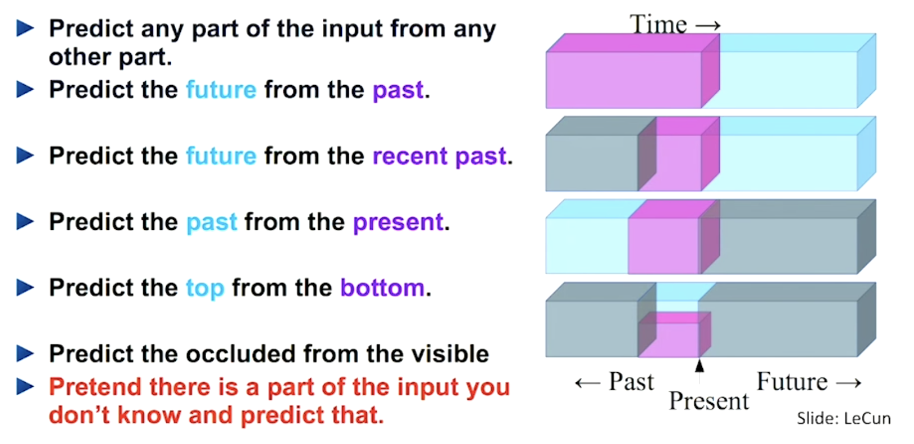
这里 是一份精心整理的自监督学习论文列表。如果你想深入阅读，请查阅。
请注意，本文不专注于 NLP / 或生成建模。通用语言模型
为什么使用自监督学习？#
自监督学习使我们能够利用数据自带的大量免费标签。其动机相当直接。生成一个带有干净标签的数据集成本高昂，但未标注数据却一直在不断产生。为了利用如此大量未标注数据，一种方法是合理设置学习目标，从数据本身获取监督信号。
自监督任务（也称为 pretext task）引导我们走向一个监督损失函数。然而，我们通常并不关心这个虚构任务的最终性能。更重要的是我们对学到的中间表示感兴趣，希望这种表示能够承载良好的语义或结构含义，并对各种实际的下游任务有益。
例如，我们可以随机旋转图像并训练模型预测每张输入图像的旋转角度。旋转预测任务是人为设计的，因此实际准确率并不重要，就像我们对待辅助任务一样。但我们期望模型能为真实世界任务学习到高质量的潜在变量，例如用极少标注样本构建一个物体识别分类器。
广义而言，所有生成模型都可以视为自监督的，但目标不同：生成模型专注于创建多样且逼真的图像，而自监督表示学习更关心产生对许多任务都有帮助的良好特征。生成建模不是本文的重点，但欢迎查看我之前的文章。
基于图像#
针对图像的自监督表示学习已提出许多想法。常见的工作流程是使用未标注图像在一个或多个 pretext 任务上训练模型，然后将该模型的一个中间特征层输入到 ImageNet 分类的多项式逻辑回归分类器中。最终的分类准确率量化了所学表示的质量。
最近，一些研究者提出在有标签数据上同时进行监督学习，并在未标注数据上进行自监督 pretext 任务，并共享权重，例如 Zhai et al, 2019 和 Sun et al, 2019。
图像扭曲#
我们期望图像上的轻微扭曲不会改变其原始语义含义或几何形状。轻微扭曲的图像被视为与原始图像相同，因此学到的特征应对于扭曲具有不变性。
Exemplar-CNN (Dosovitskiy et al., 2015) 使用未标注图像块创建代理训练数据集：
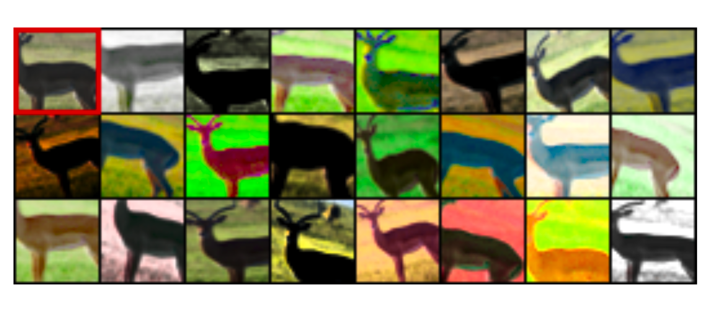
对整张图像进行旋转（Gidaris et al. 2018）是另一种有趣且低成本的修改输入图像的方式，同时语义内容保持不变。每张输入图像首先被随机旋转 90^\circ 的整数倍，对应 [0^\circ, 90^\circ, 180^\circ, 270^\circ]。模型被训练来预测应用了哪种旋转，因此这是一个 4 分类问题。
为了识别具有不同旋转的同一图像，模型必须学会识别高层物体部件，例如头部、鼻子和眼睛，以及这些部件的相对位置，而不是局部模式。这种 pretext 任务以此方式驱动模型学习物体的语义概念。
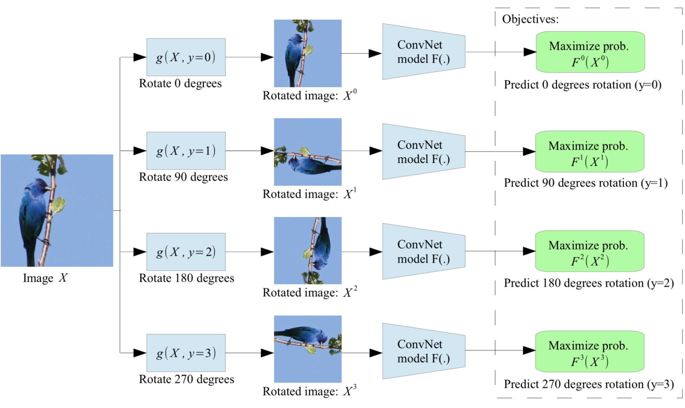
图像块#
自监督学习的第二类任务是从一张图像中提取多个图像块，并要求模型预测这些图像块之间的关系。
Doersch et al. (2015) 将 pretext 任务制定为预测来自同一图像的两个随机图像块的相对位置。模型需要理解物体的空间上下文才能判断部件之间的相对位置。
训练图像块按以下方式采样：
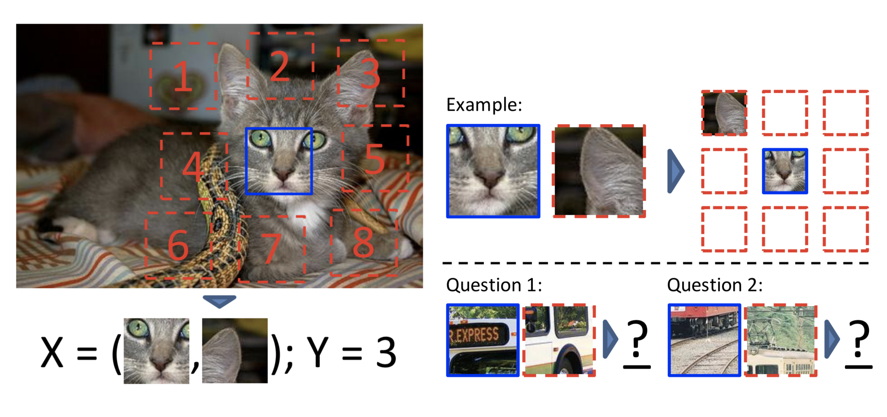
除了边界模式或纹理延续等琐碎信号外，还发现另一种有趣且有些令人惊讶的琐碎解，称为 “色差”。它是由不同波长的光通过镜头时焦距不同引起的。在此过程中，颜色通道之间可能存在微小偏移。因此，模型可以通过简单比较两个图像块中绿色和洋红色分离方式的不同来判断相对位置。这是一个与图像内容无关的琐碎解。通过将绿色和洋红色向灰色偏移，或随机丢弃 3 个颜色通道中的 2 个进行图像预处理，可以避免这种琐碎解。
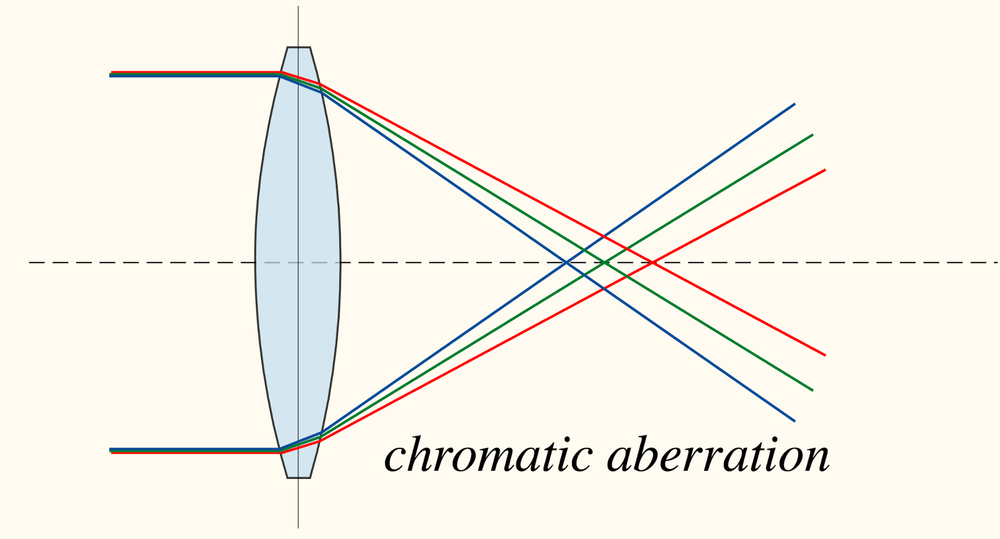
既然我们在上述任务中已经在每张图像中设置了 3x3 网格，为什么不使用全部 9 个图像块而非仅使用 2 个来使任务更具挑战性呢？遵循这个想法，Noroozi & Favaro (2016) 设计了一个拼图游戏作为 pretext 任务：模型被训练将 9 个打乱的图像块放回原始位置。
卷积网络以共享权重独立处理每个图像块，并为每个预定义排列集合的图像块索引输出一个概率向量。为了控制拼图的难度，该论文提出根据预定义的排列集合打乱图像块，并将模型配置为预测集合中所有索引的概率向量。
因为输入图像块的打乱方式不会改变要预测的正确顺序。加快训练的一种潜在改进是使用置换不变的图卷积网络（GCN），这样我们就不必多次打乱同一组图像块，与这篇 论文 中的想法相同。
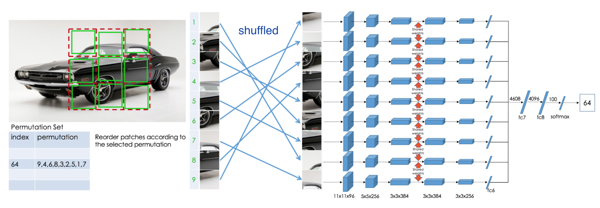
另一个想法是将“特征”或“视觉基元”视为可以在多个图像块上求和并在不同图像块之间比较的标量值属性。然后，图像块之间的关系可以通过计数特征和简单算术来定义（Noroozi, et al, 2017）。
该论文考虑了两种变换：
模型使用上述特征计数关系学习特征编码器 \phi(.)。给定输入图像 \mathbf{x} \in \mathbb{R}^{m \times n \times 3}，考虑两种类型的变换算子：
我们期望学习到：
因此均方误差损失为：\mathcal{L}_\text{feat} = |\phi(D \circ \mathbf{x}) - \sum_{i=1}^4 \phi(T_i \circ \mathbf{x})|^2_2。为了避免琐碎解 \phi(\mathbf{x}) = \mathbf{0}, \forall{\mathbf{x}}，加入另一个损失项来鼓励两个不同图像特征之间的差异：\mathcal{L}_\text{diff} = \max(0, c -|\phi(D \circ \mathbf{y}) - \sum_{i=1}^4 \phi(T_i \circ \mathbf{x})|^2_2)，其中 \mathbf{y} 是与 \mathbf{x} 不同的另一输入图像，c 是一个标量常数。最终损失为：
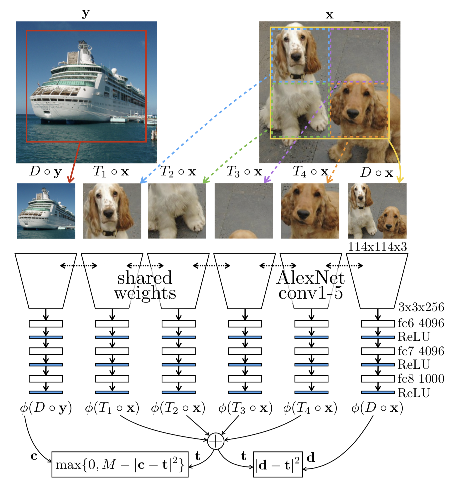
着色#
着色可以用作强大的自监督任务：模型被训练为灰度输入图像着色；准确地说，任务是将该图像映射到量化颜色值输出的分布上（Zhang et al. 2016）。
模型在 CIE Lab* 颜色空间 中输出颜色。Lab* 颜色旨在近似人类视觉，而 RGB 或 CMYK 则模拟物理设备的颜色输出。
由于着色问题具有多模态性质，对量化颜色值分桶后的预测概率分布使用交叉熵损失比对原始颜色值使用 L2 损失效果更好。ab 颜色空间以桶大小 10 进行量化。
为了在常见颜色（通常是较低的 ab 值，如云、墙壁和泥土等常见背景）和稀有颜色（很可能与图像中的关键物体相关）之间取得平衡，损失函数通过一个加权项重新平衡，该加权项提升不常见颜色桶的损失。这就像信息检索模型中为什么需要同时使用 tf 和 idf 来为词语评分一样。加权项构造为：(1-λ) * 高斯核平滑的经验概率分布 + λ * 均匀分布，其中两个分布均在量化的 ab 颜色空间上。
生成建模#
生成建模中的 pretext 任务是在学习有意义的潜在表示的同时重构原始输入。
去噪自编码器（Vincent, et al, 2008) 学会从部分损坏或带有随机噪声的版本中恢复图像。该设计受到以下事实的启发：即使图片有噪声，人类也能轻松识别物体，这表明关键视觉特征可以从噪声中提取并分离出来。参见我的 。从自编码器到 Beta-VAE
上下文编码器（Pathak, et al., 2016）被训练来填充图像中缺失的部分。设 \hat{M} 为二值掩码，0 表示丢弃的像素，1 表示保留的输入像素。模型使用重构（L2）损失和对抗损失的组合进行训练。由掩码定义的移除区域可以是任意形状。
其中 F(.) 是通过修复重构带有缺失区域的输入图像的完整流程，包括 中的编码器和解码器部分，D(.) 是与 从 GAN 到 WGAN 中类似的联合训练的判别器模型。
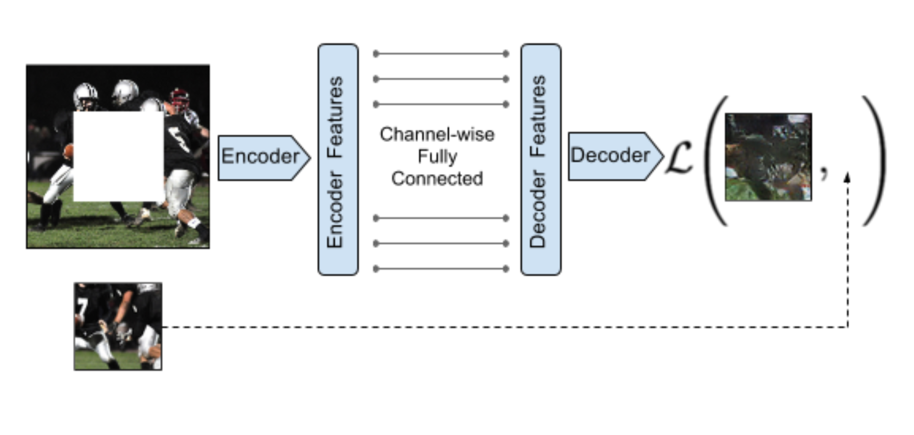
当对图像应用掩码时，上下文编码器会移除部分区域中所有颜色通道的信息。如果只隐藏一部分通道呢？分裂大脑自编码器（Zhang et al., 2017）通过从剩余通道预测一部分颜色通道来实现这一点。设具有 C 个颜色通道的数据张量 \mathbf{x} \in \mathbb{R}^{h \times w \times \vert C \vert } 作为网络第 l 层的输入。它被分割成两个不相交的部分 \mathbf{x}_1 \in \mathbb{R}^{h \times w \times \vert C_1 \vert} 和 \mathbf{x}_2 \in \mathbb{R}^{h \times w \times \vert C_2 \vert}，其中 C_1 , C_2 \subseteq C。然后训练两个子网络进行互补预测：一个网络 f_1 从 \mathbf{x}_1 预测 \mathbf{x}_2，另一个网络 f_1 从 \mathbf{x}_2 预测 \mathbf{x}_1。损失为 L1 损失或如果颜色值被量化则为交叉熵。
分割可以在 RGB-D 或 Lab* 颜色空间上发生一次，或者甚至在 CNN 网络的每一层发生，其中通道数可以是任意的。
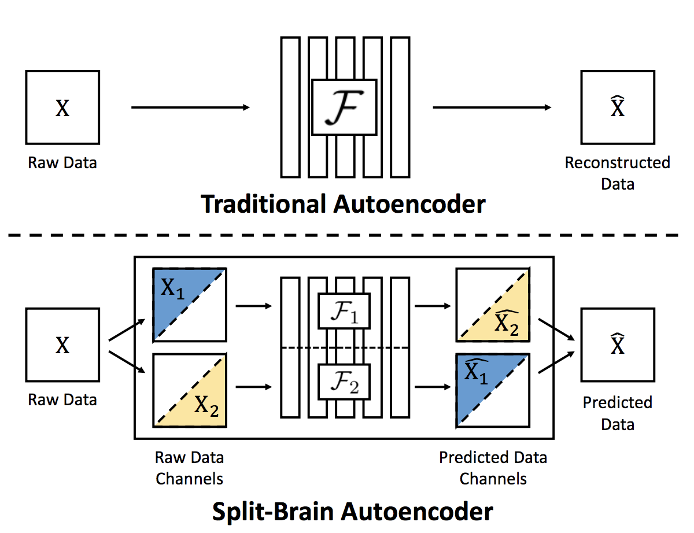
生成对抗网络（GAN）能够学会将简单潜在变量映射到任意复杂的数据分布。研究表明，此类生成模型的潜在空间捕捉了数据中的语义变化；例如，当在人脸上训练 GAN 模型时，某些潜在变量与面部表情、眼镜、性别等相关（Radford et al., 2016）。
双向 GAN（Donahue, et al, 2017）引入了一个额外的编码器 E(.) 来学习从输入到潜在变量 \mathbf{z} 的映射。判别器 D(.) 在输入数据和潜在表示的联合空间 (\mathbf{x}, \mathbf{z}) 中进行预测，以区分生成的对 (\mathbf{x}, E(\mathbf{x})) 和真实对 (G(\mathbf{z}), \mathbf{z})。模型被训练来优化目标：\min_{G, E} \max_D V(D, E, G)，其中生成器 G 和编码器 E 学会生成足够真实以迷惑判别器的数据和潜在变量，同时判别器 D 试图区分真实和生成的数据。
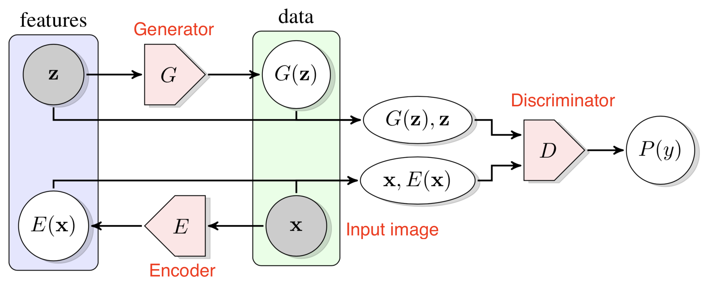
对比学习#
对比预测编码（CPC）（van den Oord, et al. 2018）是一种通过将生成建模问题转化为分类问题，从高维数据进行无监督学习的方法。CPC 中的对比损失或 InfoNCE 损失受 启发，使用交叉熵损失来衡量模型在无关“负样本”集合中分类“未来”表示的能力。这种设计部分源于以下事实：像 MSE 这样的单峰损失容量不足，而学习完整的生成模型可能过于昂贵。词嵌入学习
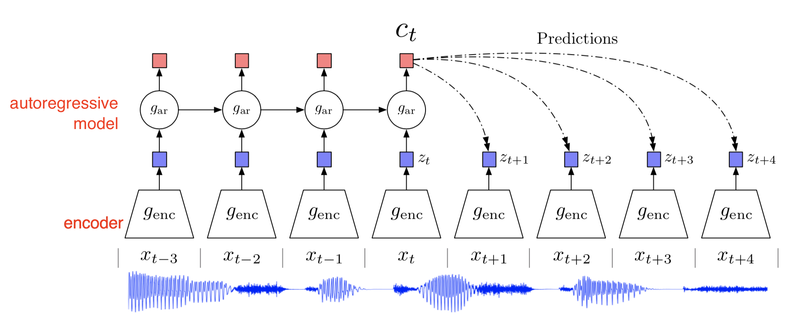
CPC 使用编码器压缩输入数据 z_t = g_\text{enc}(x_t)，并使用自回归解码器学习可能在未来预测中共享的高层上下文 c_t = g_\text{ar}(z_{\leq t})。端到端训练依赖于受 NCE 启发的对比损失。
在预测未来信息的同时，CPC 被优化以最大化输入 x 和上下文向量 c 之间的互信息：
与直接建模未来观测 p_k(x_{t+k} \vert c_t)（这可能相当昂贵）不同，CPC 建模一个密度函数来保持 x_{t+k} 和 c_t 之间的互信息：
其中 f_k 可以是非归一化的，并使用线性变换 W_k^\top c_t 进行预测，对于每个步骤 k 使用不同的 W_k 矩阵。
给定一组 N 个随机样本 X = \{x_1, \dots, x_N\}，其中只包含一个正样本 x_t \sim p(x_{t+k} \vert c_t) 和 N-1 个负样本 x_{i \neq t} \sim p(x_{t+k})，正确分类正样本（其中 \frac{f_k}{\sum f_k} 是预测）的交叉熵损失为：
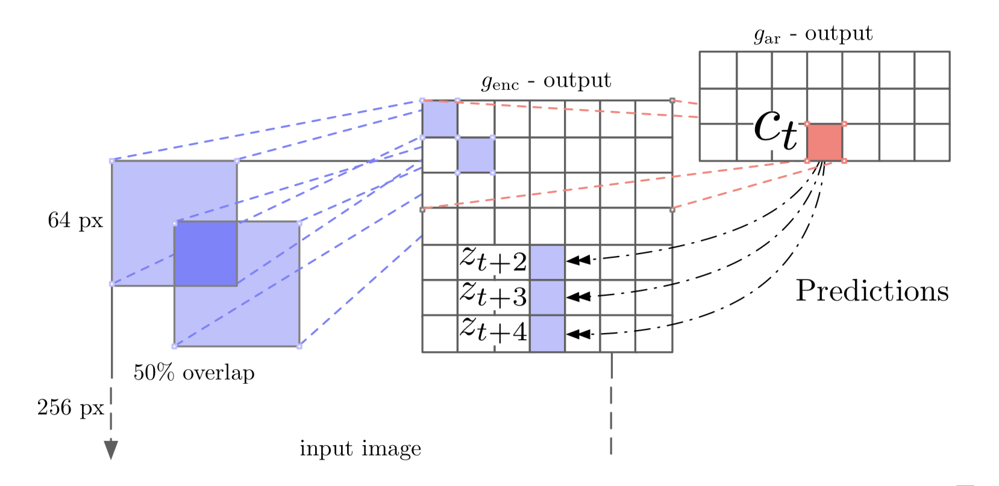
当在图像上使用 CPC 时（Henaff, et al. 2019），预测网络只能访问被掩码的特征集，以避免琐碎预测。具体而言：
对比损失用以下目标量化这个预测：在来自同一图像中其他图像块和同一批次中其他图像的负表示 \{z_l\} 集合中正确识别目标：
有关对比学习的更多内容，请查看关于 的文章。对比表示学习
基于视频#
视频包含一系列语义相关的帧。相邻帧在时间上接近，比距离较远的帧相关性更强。帧的顺序描述了某些推理规则和物理逻辑；例如物体运动应平滑，重力指向下方。
常见的工作流程是使用未标注视频在一个或多个 pretext 任务上训练模型，然后将该模型的一个中间特征层输入到一个简单模型中，在动作分类、分割或物体跟踪等下游任务上进行微调。
目标跟踪#
物体的运动由一系列视频帧跟踪。同一物体在相邻帧中在屏幕上被捕捉到的差异通常不大，通常由物体或相机的轻微运动引起。因此，为相邻帧中同一物体学习的任何视觉表示在潜在特征空间中都应该接近。受此想法启发，Wang & Gupta, 2015 提出了一种通过跟踪视频中移动物体进行视觉表示无监督学习的方法。
具体而言，具有运动的图像块在较短时间窗口（例如 30 帧）内被跟踪。选择第一个图像块 \mathbf{x} 和最后一个图像块 \mathbf{x}^+ 作为训练数据点。如果我们直接训练模型最小化两个图像块特征向量之间的差异，模型可能只会将所有内容映射到相同的值。为了避免这种琐碎解，像上面一样，加入第三个随机图像块 \mathbf{x}^-。模型通过强制两个被跟踪图像块之间的距离在特征空间中比第一个图像块与随机图像块之间的距离更近来学习表示，即 D(\mathbf{x}, \mathbf{x}^-)) > D(\mathbf{x}, \mathbf{x}^+)，其中 D(.) 是余弦距离，
损失函数为：
其中 M 是一个控制两个距离之间最小间隙的标量常数；论文中为 M=0.5。该损失在最优情况下强制 D(\mathbf{x}, \mathbf{x}^-) >= D(\mathbf{x}, \mathbf{x}^+) + M。
这种形式的损失函数在人脸识别任务中也被称为 三元组损失，其中数据集包含来自多个相机角度的多个人的图像。设 \mathbf{x}^a 为特定人的锚图像，\mathbf{x}^p 为该人从不同角度的正图像，\mathbf{x}^n 为不同人的负图像。在嵌入空间中，\mathbf{x}^a 应该比 \mathbf{x}^n 更接近 \mathbf{x}^p：
另一种略有不同的三元组损失形式，称为 n-pair 损失，也常用于机器人任务中学习观测嵌入。有关更多相关内容，请参见后续章节。
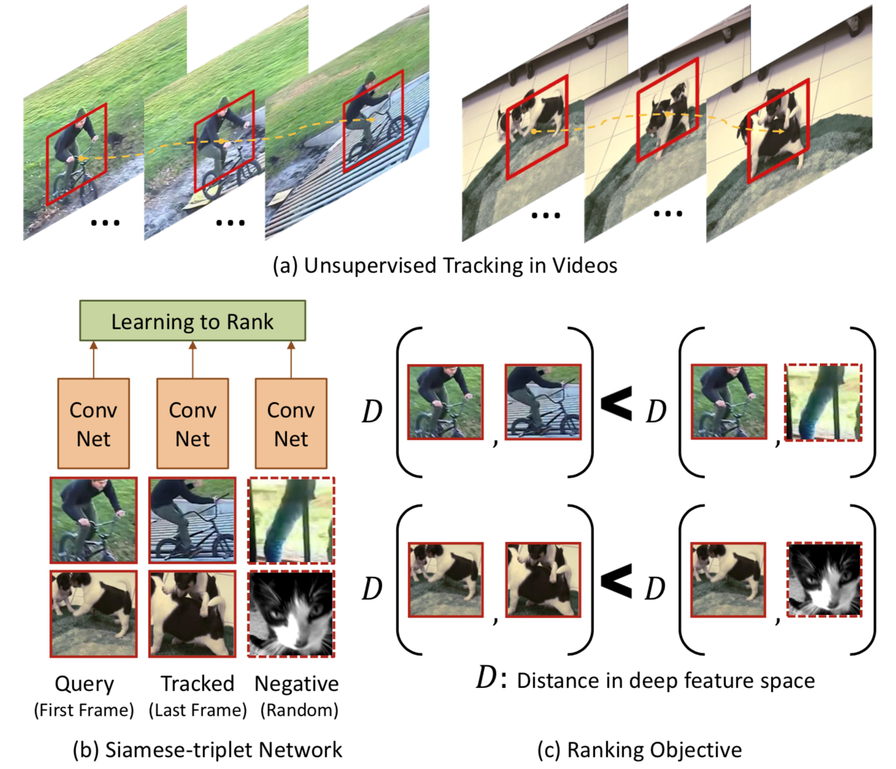
相关图像块通过两步无监督 光流 方法进行跟踪和提取：
在训练期间，给定一对相关图像块 \mathbf{x} 和 \mathbf{x}^+，在同一批次中采样 K 个随机图像块 \{\mathbf{x}^-\} 以形成 K 个训练三元组。经过几个周期后，应用难负样本挖掘使训练更困难且更高效，即搜索最大化损失的随机图像块并使用它们进行梯度更新。
帧序列#
视频帧自然按时间顺序排列。研究者提出了几种自监督任务，动机是良好的表示应该学会正确的帧序列。
一个想法是验证帧顺序（Misra, et al 2016）。pretext 任务是判断来自视频的帧序列是否按正确的时间顺序放置（“时间有效”）。模型需要跟踪和推理物体在帧之间的轻微运动才能完成这样的任务。
训练帧从高运动窗口中采样。每次采样 5 帧 (f_a, f_b, f_c, f_d, f_e)，时间戳按顺序 a < b < c < d < e。从 5 帧中创建一个正元组 (f_b, f_c, f_d) 和两个负元组 (f_b, f_a, f_d) 和 (f_b, f_e, f_d)。参数 \tau_\max = \vert b-d \vert 控制正训练实例的难度（即越高→越难），参数 \tau_\min = \min(\vert a-b \vert, \vert d-e \vert) 控制负样本的难度（即越低→越难）。
视频帧顺序验证的 pretext 任务被证明在作为预训练步骤时可以提升动作识别下游任务的性能。
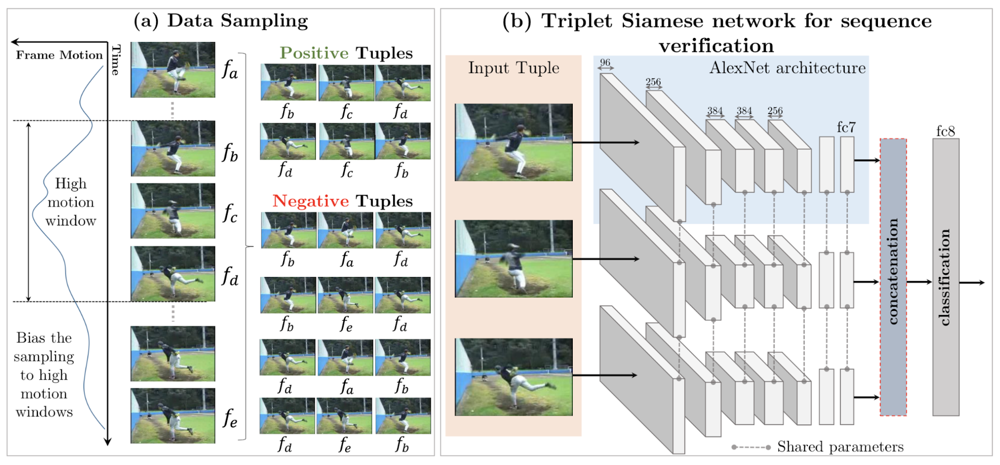
O3N（Odd-One-Out Network；Fernando et al. 2017）中的任务也基于视频帧序列验证。比上述更进一步，任务是从多个视频片段中挑选出不正确的序列。
给定 N+1 个输入视频片段，其中一个的帧被打乱，因此顺序错误，其余 N 个保持正确的时间顺序。O3N 学会预测奇异视频片段的位置。在他们的实验中，有 6 个输入片段，每个包含 6 帧。
视频中的时间箭头包含非常丰富的信息，既有低层次物理（例如重力将物体拉向地面；烟雾上升；水向下流动。）也有高层次事件推理（例如鱼向前游；你可以打破鸡蛋但不能反转它。）。因此另一个想法受此启发，通过预测时间箭头（AoT）——视频是正向还是反向播放——来学习潜在表示（Wei et al., 2018）。
分类器需要同时捕捉低层次物理和高层次语义才能预测时间箭头。提出的 T-CAM（Temporal Class-Activation-Map）网络接受 T 组，每组包含若干帧光流。每组的卷积层输出被拼接并输入到二元逻辑回归中以预测时间箭头。
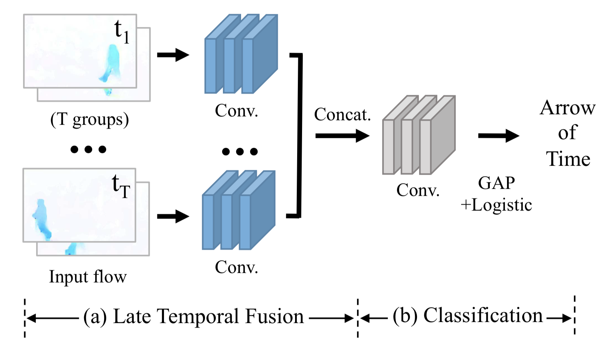
有趣的是，数据集中存在一些人为线索。如果处理不当，它们可能导致无需依赖实际视频内容的琐碎分类器：
AoT pretext 任务被证明在作为预训练步骤时可以提升动作分类下游任务的性能。请注意，仍然需要微调。
视频着色#
Vondrick et al. (2018) 将视频着色提出为自监督学习问题，产生丰富的表示，可用于视频分割和无标注视觉区域跟踪，而无需额外微调。
与基于图像的着色不同，这里的任务是利用视频帧间颜色的自然时间一致性，将正常彩色参考帧的颜色复制到另一灰度目标帧上（因此这两帧在时间上不应相距太远）。为了一致地复制颜色，模型被设计为学会跟踪不同帧中相关的像素。
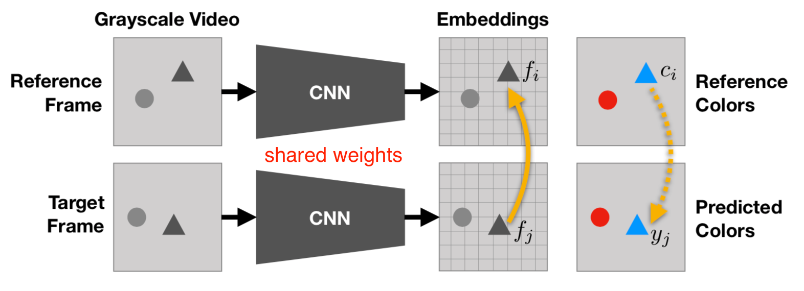
这个想法相当简单且巧妙。设 c_i 为参考帧中第 i-th 个像素的真实颜色，c_j 为目标帧中第 j 个像素的颜色。目标 \hat{c}_j 中第 j 个颜色的预测颜色是参考帧中所有像素颜色的加权和，其中加权项衡量相似性：
其中 f 是对应像素的学习嵌入；i’ 索引参考帧中的所有像素。加权项实现了一种基于注意力的指向机制，类似于 和 。由于完整的相似性矩阵可能非常大，两个帧都被下采样。c_j 和 \hat{c}_j 之间的分类交叉熵损失与量化颜色一起使用，就像在 Zhang et al. 2016 中一样。元学习：学会快速学习注意？注意！
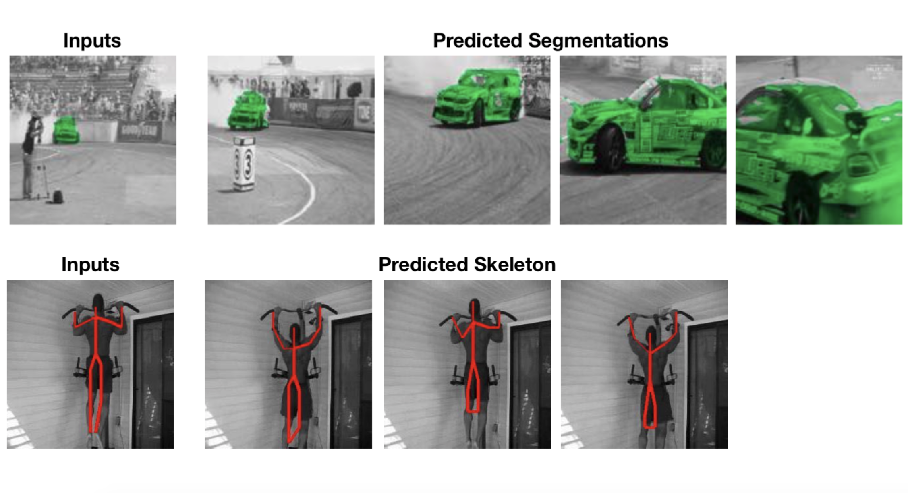
根据参考帧的标记方式，模型可用于完成几个基于颜色的下游任务，例如跟踪分割或人体姿态。无需微调。参见 使用视频着色跟踪物体分割和人体姿态。（图片来源：Vondrick et al. (2018)）
一些常见观察： 组合多个 pretext 任务可以提升性能； 更深的网络可以提升表示的质量； 监督学习基线仍然远远优于所有这些方法。
基于控制#
在现实世界中运行 RL 策略时，例如基于视觉输入控制物理机器人，正确跟踪状态、获取奖励信号或判断目标是否真正实现并非易事。视觉数据包含大量与真实状态无关的噪声，因此无法通过像素级比较推断状态的等价性。自监督表示学习在学习可直接用作控制策略输入的有用状态嵌入方面展现出巨大潜力。
本节讨论的所有案例均针对机器人学习，主要涉及来自多个相机视角的状态表示和目标表示。
多视角度量学习#
度量学习的概念已在前面几节中多次提及。常见设置是：给定样本三元组（锚 s_a、正样本 s_p、负样本 s_n），学习到的表示嵌入 \phi(s) 满足 s_a 在潜在空间中接近 s_p 但远离 s_n。
Grasp2Vec（Jang & Devin et al., 2018）旨在从免费、未标注的抓取活动中学习机器人抓取任务中以物体为中心的视觉表示。以物体为中心意味着，无论环境或机器人看起来如何，如果两张图像包含相似的物品，它们应被映射到相似的表示；否则嵌入应相距较远。
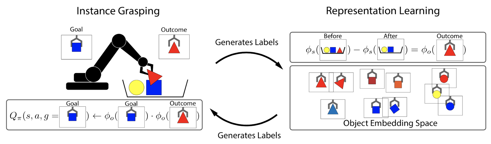
抓取系统可以判断它是否移动了物体，但无法判断是哪个物体。设置相机拍摄整个场景和被抓取物体的图像。在早期训练中，抓取机器人被执行以随机抓取任意物体 o，产生图像三元组 (s_\text{pre}, s_\text{post}, o)：
为了学习以物体为中心的表示，我们期望 s_\text{pre} 和 s_\text{post} 的嵌入之间的差异捕捉被移除的物体 o。这个想法非常有趣，类似于在 中观察到的关系，例如 distance(“king”, “queen”) ≈ distance(“man”, “woman”)。词嵌入学习
设 \phi_s 和 \phi_o 分别为场景和物体的嵌入函数。模型通过使用 n-pair 损失最小化 \phi_s(s_\text{pre}) - \phi_s(s_\text{post}) 和 \phi_o(o) 之间的距离来学习表示：
其中 B 指一批（锚、正样本）对。
当将表示学习表述为度量学习时，n-pair 损失 是一种常见选择。与显式处理（锚、正样本、负样本）三元组不同，n-pair 损失将一批中跨对的所有其他正实例视为负样本。
嵌入函数 \phi_o 在用图像呈现目标 g 时表现良好。量化实际抓取物体 o 与目标接近程度的奖励函数被定义为 r = \phi_o(g) \cdot \phi_o(o)。请注意，计算奖励仅依赖于学习的潜在空间，不涉及真实位置，因此可用于真实机器人的训练。
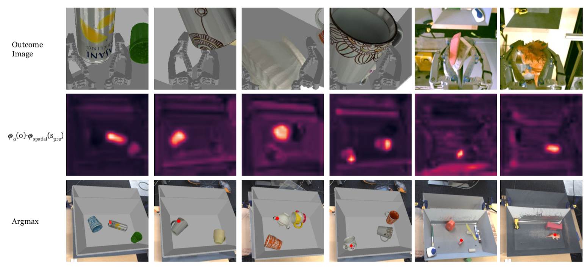
除了基于嵌入相似性的奖励函数外，在 grasp2vec 框架中训练 RL 策略还有一些其他技巧：
TCN（Time-Contrastive Networks；Sermanet, et al. 2018) 从多相机视角视频中学习，其直觉是同一场景同一时间步的不同视角应共享相同的嵌入（类似于 FaceNet），而即使是同一相机视角，嵌入也应随时间变化。因此嵌入捕捉底层状态的语义含义而非视觉相似性。TCN 嵌入使用三元组损失进行训练。
训练数据通过同时但从不同角度拍摄同一场景的视频来收集。所有视频均未标注。
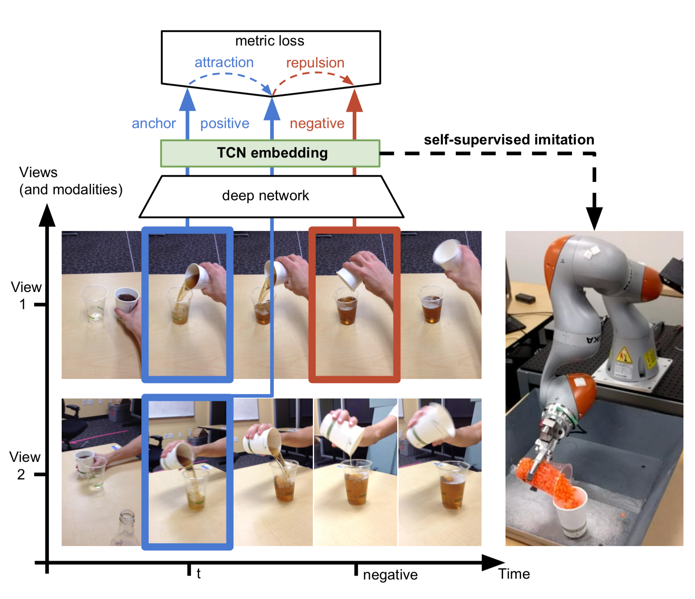
TCN 嵌入提取对相机配置不变的视觉特征。它可用于基于演示视频和潜在空间中观测之间的欧氏距离构建模仿学习的奖励函数。
对 TCN 的进一步改进是联合在多个帧上学习嵌入而非单个帧，从而产生 mfTCN（Multi-frame Time-Contrastive Networks；Dwibedi et al., 2019）。给定来自多个同步相机视角的一组视频 v_1, v_2, \dots, v_k，每个视频中时间 t 的帧以及之前以步长 s 选择的 n-1 帧被聚合并映射到一个嵌入向量中，产生大小为 (n−1) \times s + 1 的回溯窗口。每个帧首先通过 CNN 提取低级特征，然后我们使用 3D 时序卷积在时间上聚合帧。模型使用 n-pair 损失进行训练。
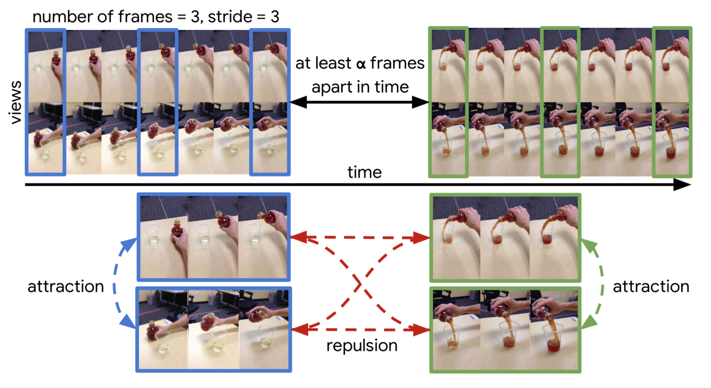
训练数据按以下方式采样：
mfTCN 嵌入可以捕捉场景中物体的位置和速度（例如在 cartpole 中），也可以作为策略的输入。
自主目标生成#
RIG（Reinforcement learning with Imagined Goals；Nair et al., 2018）描述了一种使用无监督表示学习训练目标条件策略的方法。策略通过首先想象“虚假”目标然后尝试实现它们，从自监督实践中学习。
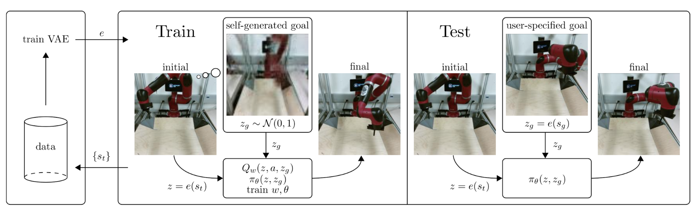
任务是控制机器人手臂在桌子上推动一个小冰球到期望位置。期望位置或目标以图像形式呈现。在训练期间，它通过 \beta-VAE 编码器学习状态 s 和目标 g 的潜在嵌入，控制策略完全在潜在空间中运行。
假设一个 从自编码器到 Beta-VAE-VAE}} 有一个编码器 q_\phi 将输入状态映射到由高斯分布建模的潜在变量 z，以及一个解码器 p_\psi 将 z 映射回状态。RIG 中的状态编码器被设置为 \beta-VAE 编码器的均值。
奖励是状态和目标嵌入向量之间的欧氏距离：r(s, g) = -|e(s) - e(g)|。与 grasp2vec 类似，RIG 也应用数据扩充，通过潜在目标重新标注：精确来说，一半的目标是随机从先验生成的，另一半使用 HER 选择。同样与 grasp2vec 一样，奖励不依赖于任何真实状态，而仅依赖于学习的状态编码，因此可用于真实机器人的训练。
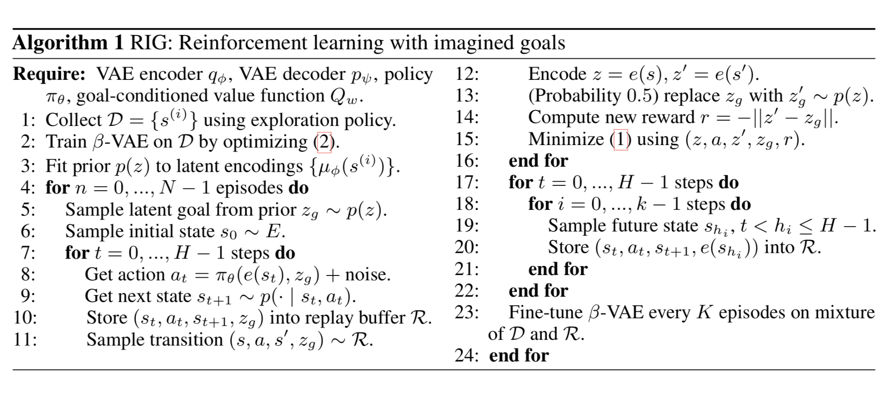
RIG 的问题是想象的目标图片中物体变化不足。如果 \beta-VAE 只用黑色冰球训练，它将无法创建包含其他物体（如不同形状和颜色的积木）的目标。随后的一项改进用 CC-VAE（Context-Conditioned VAE；Nair, et al., 2019）替换 \beta-VAE，受 CVAE（Conditional VAE；Sohn, Lee & Yan, 2015）启发，用于目标生成。
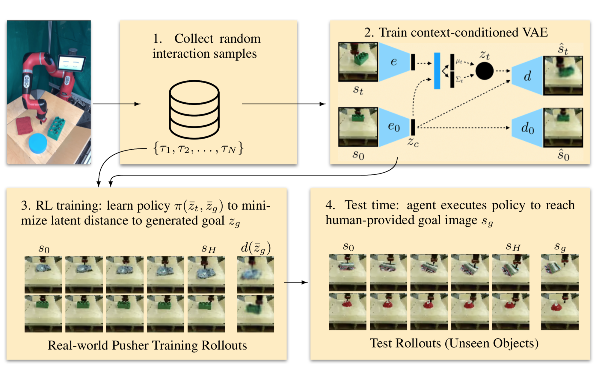
CVAE 以上下文变量 c 为条件。它训练一个编码器 q_\phi(z \vert s, c) 和一个解码器 p_\psi (s \vert z, c)，注意两者都可以访问 c。CVAE 损失惩罚从输入状态 s 通过信息瓶颈传递信息，但允许从 c 到编码器和解码器的无限制信息流。
为了创建合理的目标，CC-VAE 以起始状态 s_0 为条件，以便生成的目标呈现与 s_0 中一致的物体类型。这种目标一致性是必要的；例如，如果当前场景包含红色冰球但目标是蓝色积木，这会使策略感到困惑。
除了状态编码器 e(s) \triangleq \mu_\phi(s) 之外，CC-VAE 训练第二个卷积编码器 e_0(.) 将起始状态 s_0 转换为紧凑的上下文表示 c = e_0(s_0)。两个编码器 e(.) 和 e_0(.) 故意不同且不共享权重，因为它们预计要编码图像变化的不同因素。除了 CVAE 的损失函数外，CC-VAE 还添加了一个额外项来学习将 c 重构回 s_0，即 \hat{s}_0 = d_0(c)。
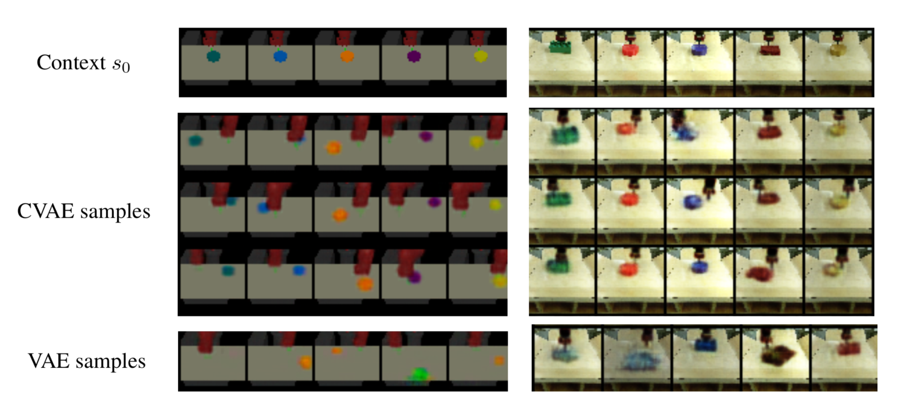
双模拟#
与任务无关的表示（例如旨在表示系统中所有动态的模型）可能会分散 RL 算法的注意力，因为无关信息也被呈现。例如，如果我们只是训练一个自编码器来重构输入图像，则无法保证整个学习到的表示对 RL 都有用。因此，如果我们只想学习与控制相关的信息，就需要远离基于重构的表示学习，因为无关细节对于重构仍然很重要。
基于双模拟的控制表示学习不依赖于重构，而是旨在根据 MDP 中行为相似性对状态进行分组。
双模拟（Givan et al. 2003）指的是两个具有相似长期行为的状态之间的等价关系。双模拟度量量化这种关系，以便我们可以聚合状态，将高维状态空间压缩成更小的空间以进行更高效的计算。两个状态之间的双模拟距离对应于它们在行为上有多大差异。
给定一个 强化学习简史（长文） \mathcal{M} = \langle \mathcal{S}, \mathcal{A}, \mathcal{P}, \mathcal{R}, \gamma \rangle 和双模拟关系 B，在关系 B 下相等的两个状态（即 s_i B s_j）应对所有动作具有相同的即时奖励，并且在下一个双模拟状态上的转移概率相同：
其中 \mathcal{S}_B 是关系 B 下的状态空间分区。
请注意 = 始终是一个双模拟关系。最有趣的是最大双模拟关系 \sim，它定义了具有最少状态组的分区 \mathcal{S}_\sim。
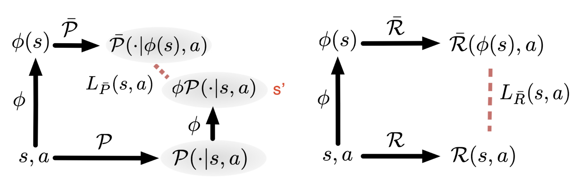
带着类似于双模拟度量的目标，DeepMDP（Gelada, et al. 2019）简化 RL 任务中的高维观测，并通过最小化两个损失学习潜在空间模型：
其中 \phi(s) 是状态 s 的嵌入；带横线的符号是同一 MDP 中但在潜在低维观测空间中运行的函数（奖励函数 R 和转移函数 P）。这里的嵌入表示 \phi 可以与双模拟度量相关联，因为双模拟距离被证明被潜在空间中的 L2 距离上界。
函数 D 量化两个概率分布之间的距离，应仔细选择。DeepMDP 专注于 Wasserstein-1 度量（也称为 从 GAN 到 WGAN）。在度量空间 (M, d)（即 d: M \times M \to \mathbb{R}）上分布 P 和 Q 之间的 Wasserstein-1 距离为：
其中 \Pi(P, Q) 是 P 和 Q 的所有 耦合 的集合。d(x, y) 定义了将粒子从点 x 移动到点 y 的成本。
根据 Monge-Kantorovich 对偶性，Wasserstein 度量具有对偶形式：
其中 \mathcal{F}_d 是在度量 d - \mathcal{F}_d = \{ f: \vert f(x) - f(y) \vert \leq d(x, y) \} 下 1-Lipschitz 函数的集合。
DeepMDP 将模型推广到 Norm Maximum Mean Discrepancy (Norm-MMD) 度量，以提高其深度价值函数边界的紧致性，同时节省计算（Wasserstein 计算成本高）。在他们的实验中，他们发现转移预测模型的模型架构对性能有很大影响。在训练无模型 RL 代理时将这些 DeepMDP 损失作为辅助损失添加，在大多数 Atari 游戏上带来了良好改进。
用于控制的深度双模拟（简称 DBC；Zhang et al. 2020）学习对 RL 任务中的控制有用的观测的潜在表示，而无需领域知识或像素级重构。
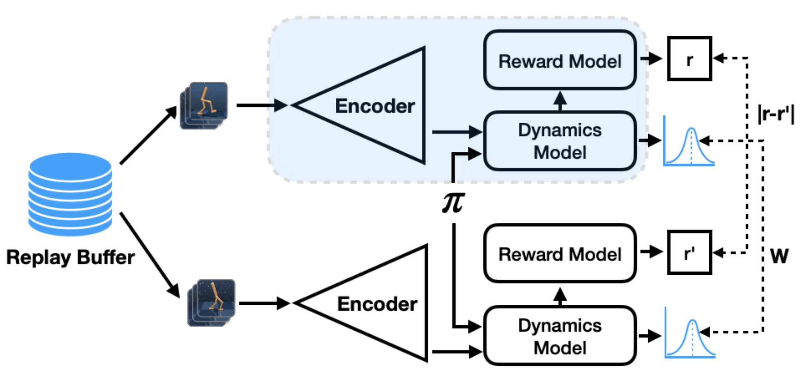
与 DeepMDP 类似，DBC 通过学习奖励模型和转移模型来建模动态。两个模型都在潜在空间 \phi(s) 中运行。嵌入 \phi 的优化依赖于来自 Ferns, et al. 2004（定理 4.5）和 Ferns, et al 2011（定理 2.6）的一个重要结论：
给定 c \in (0, 1) 一个折扣因子，\pi 一个正在持续改进的策略，以及 M 状态空间 \mathcal{S} 上有界 伪度量 的空间，我们可以定义 \mathcal{F}: M \mapsto M：
那么，\mathcal{F} 具有唯一不动点 \tilde{d}，它是一个 \pi^*-双模拟度量且 \tilde{d}(s_i, s_j) = 0 \iff s_i \sim s_j。
[证明并不简单。我以后可能会或可能不会添加它 _(:3」∠)_ …]
给定成批的观测对，用于 \phi、J(\phi) 的训练损失最小化策略上的双模拟度量与潜在空间中欧氏距离之间的均方误差：
其中 \bar{\phi}(s) 表示带停止梯度的 \phi(s)，\bar{\pi} 是平均策略输出。学习到的奖励模型 \hat{\mathcal{R}} 是确定性的，学习到的前向动态模型 \hat{\mathcal{P}} 输出高斯分布。
DBC 基于 SAC 但在潜在空间上运行：
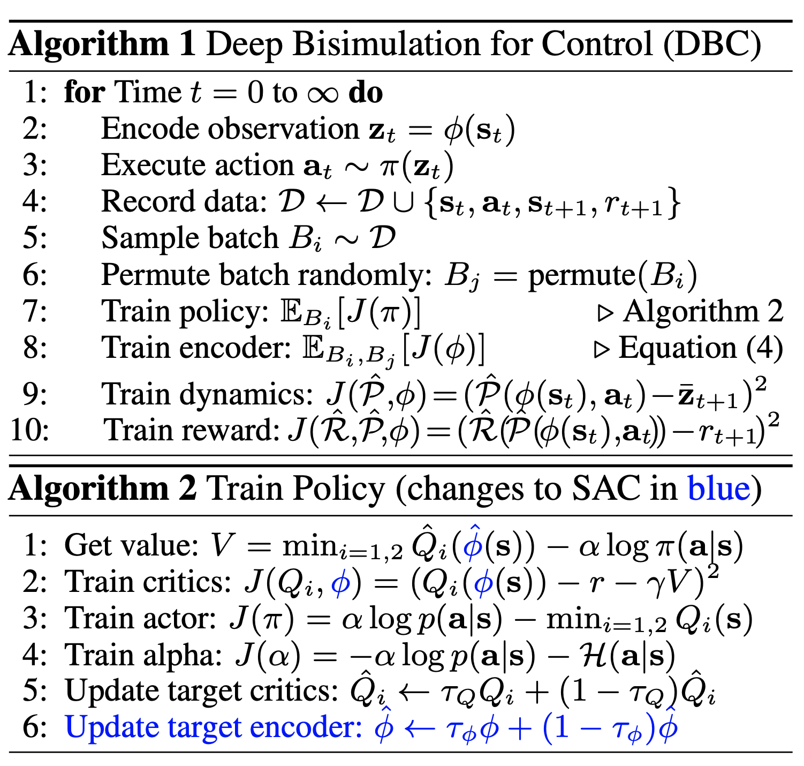
引用为：
@article{weng2019selfsup,
title = "Self-Supervised Representation Learning",
author = "Weng, Lilian",
journal = "lilianweng.github.io",
year = "2019",
url = "https://lilianweng.github.io/posts/2019-11-10-self-supervised/"
}
参考文献#
[1] Alexey Dosovitskiy, et al. “Discriminative unsupervised feature learning with exemplar convolutional neural networks.” IEEE transactions on pattern analysis and machine intelligence 38.9 (2015): 1734-1747.
[2] Spyros Gidaris, Praveer Singh & Nikos Komodakis. “Unsupervised Representation Learning by Predicting Image Rotations” ICLR 2018.
[3] Carl Doersch, Abhinav Gupta, and Alexei A. Efros. “Unsupervised visual representation learning by context prediction.” ICCV. 2015.
[4] Mehdi Noroozi & Paolo Favaro. “Unsupervised learning of visual representations by solving jigsaw puzzles.” ECCV, 2016.
[5] Mehdi Noroozi, Hamed Pirsiavash, and Paolo Favaro. “Representation learning by learning to count.” ICCV. 2017.
[6] Richard Zhang, Phillip Isola & Alexei A. Efros. “Colorful image colorization.” ECCV, 2016.
[7] Pascal Vincent, et al. “Extracting and composing robust features with denoising autoencoders.” ICML, 2008.
[8] Jeff Donahue, Philipp Krähenbühl, and Trevor Darrell. “Adversarial feature learning.” ICLR 2017.
[9] Deepak Pathak, et al. “Context encoders: Feature learning by inpainting.” CVPR. 2016.
[10] Richard Zhang, Phillip Isola, and Alexei A. Efros. “Split-brain autoencoders: Unsupervised learning by cross-channel prediction.” CVPR. 2017.
[11] Xiaolong Wang & Abhinav Gupta. “Unsupervised Learning of Visual Representations using Videos.” ICCV. 2015.
[12] Carl Vondrick, et al. “Tracking Emerges by Colorizing Videos” ECCV. 2018.
[13] Ishan Misra, C. Lawrence Zitnick, and Martial Hebert. “Shuffle and learn: unsupervised learning using temporal order verification.” ECCV. 2016.
[14] Basura Fernando, et al. “Self-Supervised Video Representation Learning With Odd-One-Out Networks” CVPR. 2017.
[15] Donglai Wei, et al. “Learning and Using the Arrow of Time” CVPR. 2018.
[16] Florian Schroff, Dmitry Kalenichenko and James Philbin. “FaceNet: A Unified Embedding for Face Recognition and Clustering” CVPR. 2015.
[17] Pierre Sermanet, et al. “Time-Contrastive Networks: Self-Supervised Learning from Video” CVPR. 2018.
[18] Debidatta Dwibedi, et al. “Learning actionable representations from visual observations.” IROS. 2018.
[19] Eric Jang & Coline Devin, et al. “Grasp2Vec: Learning Object Representations from Self-Supervised Grasping” CoRL. 2018.
[20] Ashvin Nair, et al. “Visual reinforcement learning with imagined goals” NeuriPS. 2018.
[21] Ashvin Nair, et al. “Contextual imagined goals for self-supervised robotic learning” CoRL. 2019.
[22] Aaron van den Oord, Yazhe Li & Oriol Vinyals. “Representation Learning with Contrastive Predictive Coding” arXiv preprint arXiv:1807.03748, 2018.
[23] Olivier J. Henaff, et al. “Data-Efficient Image Recognition with Contrastive Predictive Coding” arXiv preprint arXiv:1905.09272, 2019.
[24] Kaiming He, et al. “Momentum Contrast for Unsupervised Visual Representation Learning.” CVPR 2020.
[25] Zhirong Wu, et al. “Unsupervised Feature Learning via Non-Parametric Instance-level Discrimination.” CVPR 2018.
[26] Ting Chen, et al. “A Simple Framework for Contrastive Learning of Visual Representations.” arXiv preprint arXiv:2002.05709, 2020.
[27] Aravind Srinivas, Michael Laskin & Pieter Abbeel “CURL: Contrastive Unsupervised Representations for Reinforcement Learning.” arXiv preprint arXiv:2004.04136, 2020.
[28] Carles Gelada, et al. “DeepMDP: Learning Continuous Latent Space Models for Representation Learning” ICML 2019.
[29] Amy Zhang, et al. “Learning Invariant Representations for Reinforcement Learning without Reconstruction” arXiv preprint arXiv:2006.10742, 2020.
[30] Xinlei Chen, et al. “Improved Baselines with Momentum Contrastive Learning” arXiv preprint arXiv:2003.04297, 2020.
[31] Jean-Bastien Grill, et al. “Bootstrap Your Own Latent: A New Approach to Self-Supervised Learning” arXiv preprint arXiv:2006.07733, 2020.
[32] Abe Fetterman & Josh Albrecht. “Understanding self-supervised and contrastive learning with Bootstrap Your Own Latent (BYOL)” Untitled blog. Aug 24, 2020.